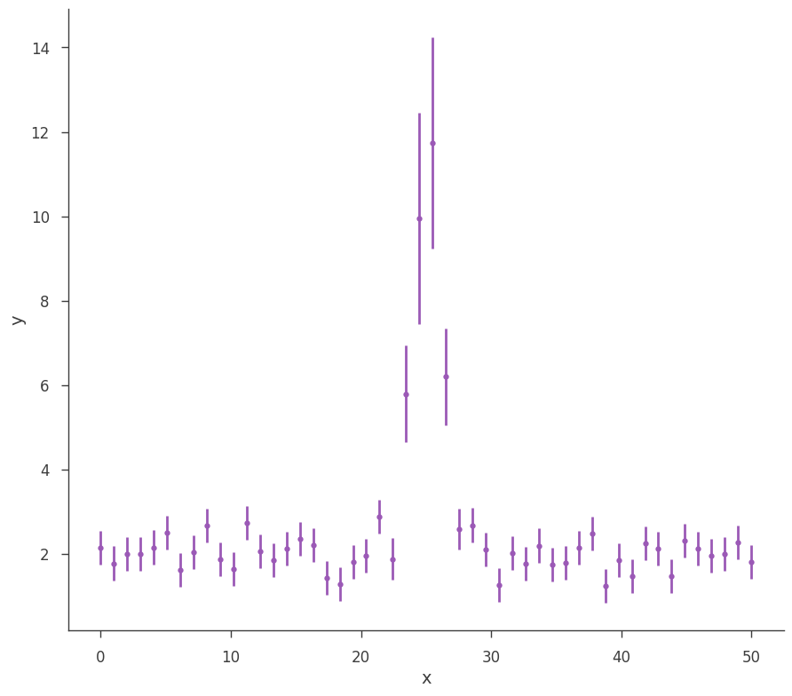
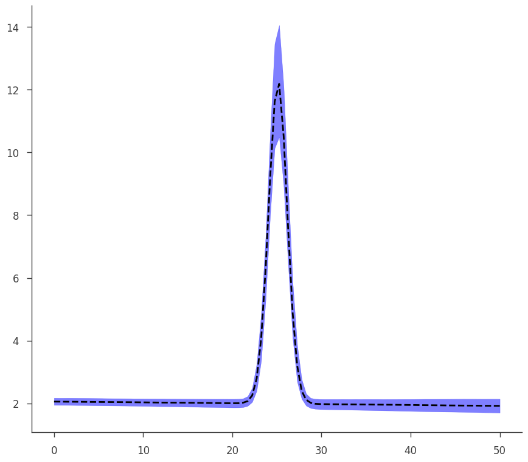
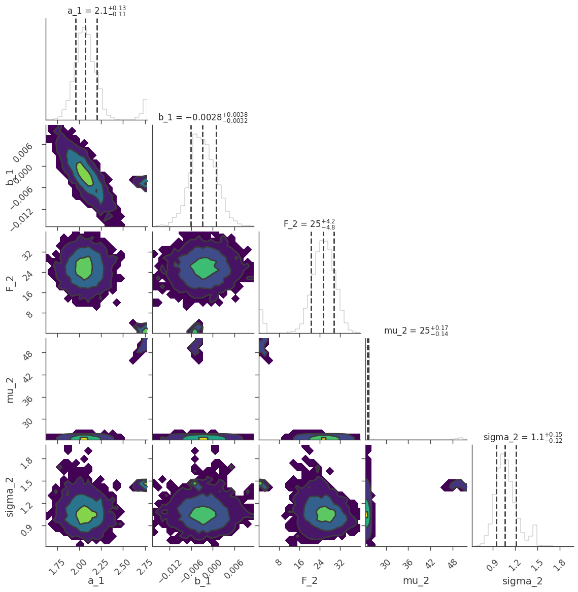
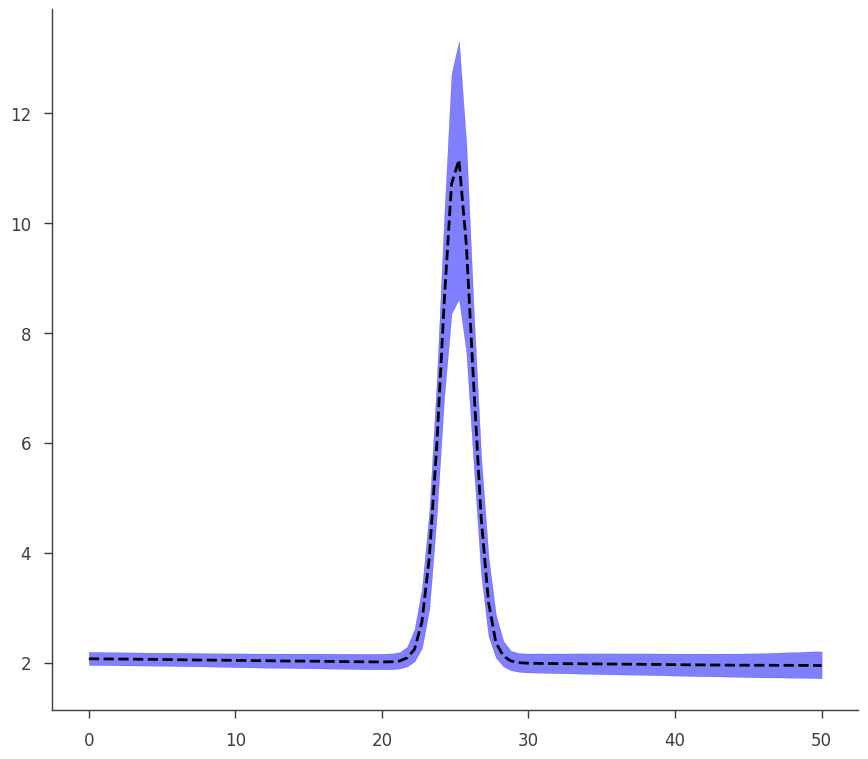

Analysis Results
3ML stores the results of a fit in a container we call an “Analysis Result” (AR). The structure of this object is designed to be useable in a live sense within an active analysis (python script, ipython interactive shell, jupyter notebook) as well as storable as a FITS file for saving results for later.
The structure is nearly the same between MLE and Bayesian analyses in order to make a seamless functionality between all analyses.
[1]:
%%capture
import numpy as np
np.seterr(all="ignore")
from threeML import *
from threeML.analysis_results import *
import astropy.units as u
[2]:
silence_logs()
from tqdm.auto import tqdm
from jupyterthemes import jtplot
%matplotlib inline
jtplot.style(context="talk", fscale=1, ticks=True, grid=False)
import matplotlib.pyplot as plt
set_threeML_style()
Let’s take a look at what we can do with an AR. First, we will simulate some data.
[3]:
gen_function = Line(a=2, b=0) + Gaussian(F=30.0, mu=25.0, sigma=1)
# Generate a dataset using the line and a gaussian.
# constant 20% error
x = np.linspace(0, 50, 50)
xy = XYLike.from_function(
"sim_data", function=gen_function, x=x, yerr=0.2 * gen_function(x)
)
fig = xy.plot()

MLE Results
First we will demonstrate how AR’s work for an MLE analysis on our synthetic data. As we will see, most of the functionality exists in the Bayesian AR’s as well.
Let’s do a simple likelihood maximization of our data and model.
[4]:
fitfun = Line() + Gaussian()
fitfun.b_1.bounds = (-10, 10.0)
fitfun.a_1.bounds = (-100, 100.0)
fitfun.F_2 = 25.0
fitfun.F_2.bounds = (1e-3, 200.0)
fitfun.mu_2 = 25.0
fitfun.mu_2.bounds = (0.0, 100.0)
fitfun.sigma_2.bounds = (1e-3, 10.0)
model = Model(PointSource("fake", 0.0, 0.0, fitfun))
data = DataList(xy)
jl = JointLikelihood(model, DataList(xy))
_ = jl.fit()
Best fit values:
| result | unit | |
|---|---|---|
| parameter | ||
| fake.spectrum.main.composite.a_1 | 2.07 +/- 0.11 | 1 / (keV s cm2) |
| fake.spectrum.main.composite.b_1 | (-3 +/- 4) x 10^-3 | 1 / (s cm2 keV2) |
| fake.spectrum.main.composite.F_2 | (2.7 +/- 0.4) x 10 | 1 / (s cm2) |
| fake.spectrum.main.composite.mu_2 | (2.511 +/- 0.013) x 10 | keV |
| fake.spectrum.main.composite.sigma_2 | 1.05 +/- 0.11 | keV |
Correlation matrix:
| 1.00 | -0.85 | -0.04 | 0.02 | -0.08 |
| -0.85 | 1.00 | 0.00 | -0.02 | -0.00 |
| -0.04 | 0.00 | 1.00 | -0.14 | -0.18 |
| 0.02 | -0.02 | -0.14 | 1.00 | -0.00 |
| -0.08 | -0.00 | -0.18 | -0.00 | 1.00 |
Values of -log(likelihood) at the minimum:
| -log(likelihood) | |
|---|---|
| sim_data | 20.184435 |
| total | 20.184435 |
Values of statistical measures:
| statistical measures | |
|---|---|
| AIC | 51.732506 |
| BIC | 59.928984 |
We can get our errors as always, but the results cannot be propagated (error propagation assumes Gaussian errors, i.e., symmetric errors) In this case though errors are pretty symmetric, so we are likely in the case where the MLE is actually normally distributed.
[5]:
jl.get_errors()
| result | unit | |
|---|---|---|
| parameter | ||
| fake.spectrum.main.composite.a_1 | 2.07 +/- 0.11 | 1 / (keV s cm2) |
| fake.spectrum.main.composite.b_1 | (-3 +/- 4) x 10^-3 | 1 / (s cm2 keV2) |
| fake.spectrum.main.composite.F_2 | (2.7 +/- 0.4) x 10 | 1 / (s cm2) |
| fake.spectrum.main.composite.mu_2 | (2.511 -0.013 +0.014) x 10 | keV |
| fake.spectrum.main.composite.sigma_2 | 1.05 -0.10 +0.12 | keV |
[5]:
| value | negative_error | positive_error | error | unit | |
|---|---|---|---|---|---|
| fake.spectrum.main.composite.a_1 | 2.069030 | -0.113374 | 0.113577 | 0.113475 | 1 / (keV s cm2) |
| fake.spectrum.main.composite.b_1 | -0.002799 | -0.003841 | 0.003847 | 0.003844 | 1 / (s cm2 keV2) |
| fake.spectrum.main.composite.F_2 | 27.336658 | -3.980991 | 3.978972 | 3.979982 | 1 / (s cm2) |
| fake.spectrum.main.composite.mu_2 | 25.112211 | -0.132180 | 0.136138 | 0.134159 | keV |
| fake.spectrum.main.composite.sigma_2 | 1.050675 | -0.104330 | 0.117358 | 0.110844 | keV |
We need to get the AnalysisResults object that is created after a fit is performed. The AR object is a member of the JointLikelihood object
[6]:
ar = jl.results
We can display the results of the analysis. Note, when a fit is performed, the post display is actaully from the internal AR.
[7]:
ar.display()
Best fit values:
| result | unit | |
|---|---|---|
| parameter | ||
| fake.spectrum.main.composite.a_1 | 2.07 +/- 0.11 | 1 / (keV s cm2) |
| fake.spectrum.main.composite.b_1 | (-3 +/- 4) x 10^-3 | 1 / (s cm2 keV2) |
| fake.spectrum.main.composite.F_2 | (2.7 +/- 0.4) x 10 | 1 / (s cm2) |
| fake.spectrum.main.composite.mu_2 | (2.511 +/- 0.013) x 10 | keV |
| fake.spectrum.main.composite.sigma_2 | 1.05 +/- 0.11 | keV |
Correlation matrix:
| 1.00 | -0.85 | -0.04 | 0.02 | -0.08 |
| -0.85 | 1.00 | 0.00 | -0.02 | -0.00 |
| -0.04 | 0.00 | 1.00 | -0.14 | -0.18 |
| 0.02 | -0.02 | -0.14 | 1.00 | -0.00 |
| -0.08 | -0.00 | -0.18 | -0.00 | 1.00 |
Values of -log(likelihood) at the minimum:
| -log(likelihood) | |
|---|---|
| sim_data | 20.184435 |
| total | 20.184435 |
Values of statistical measures:
| statistical measures | |
|---|---|
| AIC | 51.732506 |
| BIC | 59.928984 |
By default, the equal tail intervals are displayed. We can instead display highest posterior densities (equal in the MLE case)
[8]:
ar.display("hpd")
Best fit values:
| result | unit | |
|---|---|---|
| parameter | ||
| fake.spectrum.main.composite.a_1 | 2.07 +/- 0.11 | 1 / (keV s cm2) |
| fake.spectrum.main.composite.b_1 | (-3 +/- 4) x 10^-3 | 1 / (s cm2 keV2) |
| fake.spectrum.main.composite.F_2 | (2.7 +/- 0.4) x 10 | 1 / (s cm2) |
| fake.spectrum.main.composite.mu_2 | (2.511 +/- 0.013) x 10 | keV |
| fake.spectrum.main.composite.sigma_2 | 1.05 +/- 0.11 | keV |
Correlation matrix:
| 1.00 | -0.85 | -0.04 | 0.02 | -0.08 |
| -0.85 | 1.00 | 0.00 | -0.02 | -0.00 |
| -0.04 | 0.00 | 1.00 | -0.14 | -0.18 |
| 0.02 | -0.02 | -0.14 | 1.00 | -0.00 |
| -0.08 | -0.00 | -0.18 | -0.00 | 1.00 |
Values of -log(likelihood) at the minimum:
| -log(likelihood) | |
|---|---|
| sim_data | 20.184435 |
| total | 20.184435 |
Values of statistical measures:
| statistical measures | |
|---|---|
| AIC | 51.732506 |
| BIC | 59.928984 |
The AR stores several properties from the analysis:
[9]:
ar.analysis_type
[9]:
'MLE'
[10]:
ar.covariance_matrix
[10]:
array([[ 1.28764699e-02, -3.69190254e-04, -1.94590841e-02,
2.26500662e-04, -1.03300792e-03],
[-3.69190254e-04, 1.47783060e-05, 1.91218218e-05,
-1.13020136e-05, -1.76077611e-06],
[-1.94590841e-02, 1.91218218e-05, 1.58431093e+01,
-7.41449683e-02, -7.63441178e-02],
[ 2.26500662e-04, -1.13020136e-05, -7.41449683e-02,
1.76268765e-02, -5.56743971e-05],
[-1.03300792e-03, -1.76077611e-06, -7.63441178e-02,
-5.56743971e-05, 1.19413477e-02]])
[11]:
ar.get_point_source_flux(1 * u.keV, 0.1 * u.MeV)
[11]:
| flux | low bound | hi bound | |
|---|---|---|---|
| fake: total | 1.6214040775662412e-05 erg / (s cm2) | 1.4844423207439711e-05 erg / (s cm2) | 1.7633187500220847e-05 erg / (s cm2) |
[12]:
ar.optimized_model
[12]:
| N | |
|---|---|
| Point sources | 1 |
| Extended sources | 0 |
| Particle sources | 0 |
Free parameters (5):
| value | min_value | max_value | unit | |
|---|---|---|---|---|
| fake.spectrum.main.composite.a_1 | 2.06903 | -100.0 | 100.0 | keV-1 s-1 cm-2 |
| fake.spectrum.main.composite.b_1 | -0.002799 | -10.0 | 10.0 | s-1 cm-2 keV-2 |
| fake.spectrum.main.composite.F_2 | 27.336658 | 0.001 | 200.0 | s-1 cm-2 |
| fake.spectrum.main.composite.mu_2 | 25.112211 | 0.0 | 100.0 | keV |
| fake.spectrum.main.composite.sigma_2 | 1.050675 | 0.001 | 10.0 | keV |
Fixed parameters (2):
(abridged. Use complete=True to see all fixed parameters)
Properties (0):
(none)
Linked parameters (0):
(none)
Independent variables:
(none)
Linked functions (0):
(none)
Saving results to disk
The beauty of the analysis result is that all of this information can be written to disk and restored at a later time. The statistical parameters, best-fit model, etc. can all be recovered.
AR’s are stored as a structured FITS file. We write the AR like this:
[13]:
ar.write_to("test_mle.fits", overwrite=True)
WARNING: VerifyWarning: Card is too long, comment will be truncated. [astropy.io.fits.card]
The FITS file can be examines with any normal FITS reader.
[14]:
import astropy.io.fits as fits
[15]:
ar_fits = fits.open("test_mle.fits")
ar_fits.info()
Filename: test_mle.fits
No. Name Ver Type Cards Dimensions Format
0 PRIMARY 1 PrimaryHDU 6 ()
1 ANALYSIS_RESULTS 1 BinTableHDU 38 5R x 9C [36A, D, D, D, D, 16A, 5D, D, D]
However, to easily pull the results back into the 3ML framework, we use the \({\tt load\_analysis\_results}\) function:
[16]:
ar_reloaded = load_analysis_results("test_mle.fits")
[17]:
ar_reloaded.get_statistic_frame()
[17]:
| -log(likelihood) | |
|---|---|
| sim_data | 20.184435 |
| total | 20.184435 |
You can get a DataFrame with the saved results:
[18]:
ar_reloaded.get_data_frame()
[18]:
| value | negative_error | positive_error | error | unit | |
|---|---|---|---|---|---|
| fake.spectrum.main.composite.a_1 | 2.069030 | -0.110495 | 0.110510 | 0.110503 | 1 / (keV s cm2) |
| fake.spectrum.main.composite.b_1 | -0.002799 | -0.003756 | 0.003815 | 0.003785 | 1 / (s cm2 keV2) |
| fake.spectrum.main.composite.F_2 | 27.336658 | -4.044984 | 3.832802 | 3.938893 | 1 / (s cm2) |
| fake.spectrum.main.composite.mu_2 | 25.112211 | -0.126319 | 0.131605 | 0.128962 | keV |
| fake.spectrum.main.composite.sigma_2 | 1.050675 | -0.106713 | 0.107164 | 0.106939 | keV |
Analysis Result Sets
When doing time-resolved analysis or analysing a several objects, we can save several AR’s is a set. This is achieved with the analysis result set. We can pass an array of AR’s to the set and even set up descriptions for the different entries.
[19]:
from threeML.analysis_results import AnalysisResultsSet
analysis_set = AnalysisResultsSet([ar, ar_reloaded])
# index as time bins
analysis_set.set_bins("testing", [-1, 1], [3, 5], unit="s")
# write to disk
analysis_set.write_to("analysis_set_test.fits", overwrite=True)
WARNING: VerifyWarning: Card is too long, comment will be truncated. [astropy.io.fits.card]
[20]:
analysis_set = load_analysis_results("analysis_set_test.fits")
[21]:
analysis_set[0].display()
Best fit values:
| result | unit | |
|---|---|---|
| parameter | ||
| fake.spectrum.main.composite.a_1 | 2.07 +/- 0.11 | 1 / (keV s cm2) |
| fake.spectrum.main.composite.b_1 | (-3 +/- 4) x 10^-3 | 1 / (s cm2 keV2) |
| fake.spectrum.main.composite.F_2 | (2.7 +/- 0.4) x 10 | 1 / (s cm2) |
| fake.spectrum.main.composite.mu_2 | (2.511 +/- 0.013) x 10 | keV |
| fake.spectrum.main.composite.sigma_2 | 1.05 +/- 0.11 | keV |
Correlation matrix:
| 1.00 | -0.85 | -0.04 | 0.02 | -0.08 |
| -0.85 | 1.00 | 0.00 | -0.02 | -0.00 |
| -0.04 | 0.00 | 1.00 | -0.14 | -0.18 |
| 0.02 | -0.02 | -0.14 | 1.00 | -0.00 |
| -0.08 | -0.00 | -0.18 | -0.00 | 1.00 |
Values of -log(likelihood) at the minimum:
| -log(likelihood) | |
|---|---|
| sim_data | 20.184435 |
| total | 20.184435 |
Values of statistical measures:
| statistical measures | |
|---|---|
| AIC | 51.732506 |
| BIC | 59.928984 |
Error propagation
In 3ML, we propagate errors for MLE reults via sampling of the covariance matrix instead of Taylor exanding around the maximum of the likelihood and computing a jacobain. Thus, we can achieve non-linear error propagation.
You can use the results for propagating errors non-linearly for analytical functions:
[22]:
p1 = ar.get_variates("fake.spectrum.main.composite.b_1")
p2 = ar.get_variates("fake.spectrum.main.composite.a_1")
print("Propagating a+b, with a and b respectively:")
print(p1)
print(p2)
print("\nThis is the result (with errors):")
res = p1 + p2
print(res)
print(res.equal_tail_interval())
Propagating a+b, with a and b respectively:
equal-tail: (-3 +/- 4) x 10^-3, hpd: (-3 +/- 4) x 10^-3
equal-tail: 2.06 -0.11 +0.12, hpd: 2.06 -0.11 +0.12
This is the result (with errors):
equal-tail: 2.06 -0.11 +0.12, hpd: 2.06 -0.11 +0.12
(1.9520186424239594, 2.1761286498229993)
The propagation accounts for covariances. For example this has error of zero (of course) since there is perfect covariance.
[23]:
print("\nThis is 50 * a/a:")
print(50 * p1 / p1)
This is 50 * a/a:
equal-tail: (5.0 +/- 0) x 10, hpd: (5.0 +/- 0) x 10
WARNING UserWarning: Using UFloat objects with std_dev==0 may give unexpected results.
You can use arbitrary (np) functions
[24]:
print("\nThis is arcsinh(b + 5*) / np.log10(b) (why not?)")
print(np.arcsinh(p1 + 5 * p2) / np.log10(p2))
This is arcsinh(b + 5*) / np.log10(b) (why not?)
equal-tail: 9.6 -0.5 +0.6, hpd: 9.6 -0.6 +0.5
Errors can become asymmetric. For example, the ratio of two gaussians is asymmetric notoriously:
[25]:
print("\nRatio a/b:")
print(p2 / p1)
Ratio a/b:
equal-tail: (-0.4 -0.7 +1.1) x 10^3, hpd: (-0.4 -0.7 +1.1) x 10^3
You can always use it with arbitrary functions:
[26]:
def my_function(x, a, b):
return b * x**a
print("\nPropagating using a custom function:")
print(my_function(2.3, p1, p2))
Propagating using a custom function:
equal-tail: 2.06 +/- 0.11, hpd: 2.06 -0.10 +0.12
This is an example of an error propagation to get the plot of the model with its errors (which are propagated without assuming linearity on parameters)
[27]:
def go(fitfun, ar, model):
fig, ax = plt.subplots()
# Gather the parameter variates
arguments = {}
for par in fitfun.parameters.values():
if par.free:
this_name = par.name
this_variate = ar.get_variates(par.path)
# Do not use more than 1000 values (would make computation too slow for nothing)
if len(this_variate) > 1000:
this_variate = np.random.choice(this_variate, size=1000)
arguments[this_name] = this_variate
# Prepare the error propagator function
pp = ar.propagate(
ar.optimized_model.fake.spectrum.main.shape.evaluate_at, **arguments
)
# You can just use it as:
print(pp(5.0))
# Make the plot
energies = np.linspace(0, 50, 100)
low_curve = np.zeros_like(energies)
middle_curve = np.zeros_like(energies)
hi_curve = np.zeros_like(energies)
free_parameters = model.free_parameters
p = tqdm(total=len(energies), desc="Propagating errors")
with use_astromodels_memoization(False):
for i, e in enumerate(energies):
this_flux = pp(e)
low_bound, hi_bound = this_flux.equal_tail_interval()
low_curve[i], middle_curve[i], hi_curve[i] = (
low_bound,
this_flux.median,
hi_bound,
)
p.update(1)
ax.plot(energies, middle_curve, "--", color="black")
ax.fill_between(energies, low_curve, hi_curve, alpha=0.5, color="blue")
[28]:
go(fitfun, ar, model)
equal-tail: 2.05 -0.11 +0.12, hpd: 2.05 -0.11 +0.12

Bayesian Analysis Results
Analysis Results work exactly the same under Bayesian analysis.
Let’s run the analysis first.
[29]:
for parameter in ar.optimized_model:
model[parameter.path].value = parameter.value
model.fake.spectrum.main.composite.a_1.set_uninformative_prior(Uniform_prior)
model.fake.spectrum.main.composite.b_1.set_uninformative_prior(Uniform_prior)
model.fake.spectrum.main.composite.F_2.set_uninformative_prior(Log_uniform_prior)
model.fake.spectrum.main.composite.mu_2.set_uninformative_prior(Uniform_prior)
model.fake.spectrum.main.composite.sigma_2.set_uninformative_prior(Log_uniform_prior)
bs = BayesianAnalysis(model, data)
bs.set_sampler("emcee")
bs.sampler.setup(n_iterations=1000, n_burn_in=100, n_walkers=20)
samples = bs.sample()
Maximum a posteriori probability (MAP) point:
| result | unit | |
|---|---|---|
| parameter | ||
| fake.spectrum.main.composite.a_1 | 2.07 -0.10 +0.14 | 1 / (keV s cm2) |
| fake.spectrum.main.composite.b_1 | (-3.2 -2.9 +4) x 10^-3 | 1 / (s cm2 keV2) |
| fake.spectrum.main.composite.F_2 | (2.64 -0.6 +0.33) x 10 | 1 / (s cm2) |
| fake.spectrum.main.composite.mu_2 | (2.512 -0.014 +0.016) x 10 | keV |
| fake.spectrum.main.composite.sigma_2 | 1.04 -0.10 +0.17 | keV |
Values of -log(posterior) at the minimum:
| -log(posterior) | |
|---|---|
| sim_data | -23.565319 |
| total | -23.565319 |
Values of statistical measures:
| statistical measures | |
|---|---|
| AIC | 58.494275 |
| BIC | 66.690753 |
| DIC | -34.496124 |
| PDIC | -93.347761 |
Again, we grab the results from the BayesianAnalysis object:
[30]:
ar2 = bs.results
We can write and read the results to/from a file:
[31]:
ar2.write_to("test_bayes.fits", overwrite=True)
WARNING: VerifyWarning: Card is too long, comment will be truncated. [astropy.io.fits.card]
[32]:
ar2_reloaded = load_analysis_results("test_bayes.fits")
The AR holds the posterior samples from the analysis. We can see the saved and live reults are the same:
[33]:
np.allclose(ar2_reloaded.samples, ar2.samples)
[33]:
True
NOTE: MLE AR’s store samples as well. These are the samples from the covariance matrix
We can examine the marginal distributions of the parameters:
[34]:
fig = ar2.corner_plot()

We can return pandas DataFrames with equal tail or HPD results.
[35]:
ar2.get_data_frame("equal tail")
[35]:
| value | negative_error | positive_error | error | unit | |
|---|---|---|---|---|---|
| fake.spectrum.main.composite.a_1 | 2.066799 | -0.104883 | 0.136293 | 0.120588 | 1 / (keV s cm2) |
| fake.spectrum.main.composite.b_1 | -0.003163 | -0.002915 | 0.004131 | 0.003523 | 1 / (s cm2 keV2) |
| fake.spectrum.main.composite.F_2 | 26.374634 | -5.756858 | 3.266455 | 4.511657 | 1 / (s cm2) |
| fake.spectrum.main.composite.mu_2 | 25.116793 | -0.144820 | 0.160714 | 0.152767 | keV |
| fake.spectrum.main.composite.sigma_2 | 1.044835 | -0.099772 | 0.167164 | 0.133468 | keV |
[36]:
ar2.get_data_frame("hpd")
[36]:
| value | negative_error | positive_error | error | unit | |
|---|---|---|---|---|---|
| fake.spectrum.main.composite.a_1 | 2.066799 | -0.101866 | 0.138523 | 0.120195 | 1 / (keV s cm2) |
| fake.spectrum.main.composite.b_1 | -0.003163 | -0.002900 | 0.004142 | 0.003521 | 1 / (s cm2 keV2) |
| fake.spectrum.main.composite.F_2 | 26.374634 | -5.057926 | 3.881544 | 4.469735 | 1 / (s cm2) |
| fake.spectrum.main.composite.mu_2 | 25.116793 | -0.166604 | 0.132784 | 0.149694 | keV |
| fake.spectrum.main.composite.sigma_2 | 1.044835 | -0.114737 | 0.139802 | 0.127269 | keV |
Error propagation operates the same way. Internally, the process is the same as the MLE results, however, the samples are those of the posterior rather than the (assumed) covariance matrix.
[37]:
p1 = ar2.get_variates("fake.spectrum.main.composite.b_1")
p2 = ar2.get_variates("fake.spectrum.main.composite.a_1")
print(p1)
print(p2)
res = p1 + p2
print(res)
equal-tail: (-2.8 -3.2 +4) x 10^-3, hpd: (-2.8 -3.2 +4) x 10^-3
equal-tail: 2.07 -0.11 +0.13, hpd: 2.07 -0.11 +0.13
equal-tail: 2.07 -0.11 +0.13, hpd: 2.07 -0.11 +0.12
To demonstrate how the two objects (MLE and Bayes) are the same, we see that our plotting function written for the MLE result works on our Bayesian results seamlessly.
[38]:
go(fitfun, ar2, model)
equal-tail: 2.06 -0.11 +0.12, hpd: 2.06 -0.12 +0.11

[ ]: